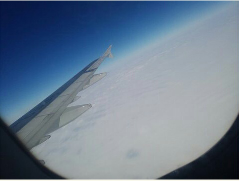
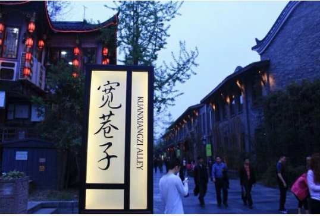

宽窄巷子
 46 用户点评
46 用户点评
小巷子里寻觅老成都和慢生活
烟花印象
“和你在成都大街小巷走一走吧


“和你在成都大街小巷走一走吧
“和你在成都大街小巷走一走吧
更 多 印 象
基本信息
概况
宽窄巷子位于四川省成都市青羊区长顺街附近，由宽巷子、窄巷子、井巷子平行排列组成，全为青黛砖瓦的仿古四合院落，这里也是成都遗留下来的较成规模的清朝古街道，与大慈寺、文殊院一起并称为成都三大历史文化名城保护街区。康熙五十七年（1718年），在平定了准葛尔之乱后，选留千余兵丁驻守成都，在当年少城基础上修筑了满城。民国初年，当时的城市管理者下文，将“胡同”改为“巷子” 。二十世纪80年代，宽窄巷子列入《成都历史文化名城保护规划》。2003年，宽窄巷子街区正式出现在世人的词典中。宽窄巷子是国家AA级旅游景区，先后获2009年“中国特色商业步行街”、四川省历史文化名街、2011年成都新十景、四川十大最美街道等称号。
地址
四川省 成都市 青羊区 同仁路以东长顺街以西
到达方式
1、乘坐5路、13路、43路、47路等公交车在【金河路】站下车2、、乘坐5路、13路、43路、47路等公交车在【金河路】站下车 3、乘坐5路、13路、43路、47路等公交车在【金河路】站下车
开放时间
全天